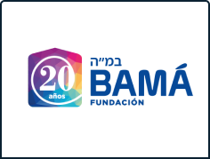

Sobre mí
Educación y experiencia laboral
Estudios
Primaria
Escuela primaria en el colegio Natan Gesang.
Secundaria
Escuela secundaria en ORT Argentina, especializado en TIC.
Curso de liderazgo
Curso de liderazgo no formal en la comunidad Bet-Hilel.

Curso de liderazgo para educadores no formales
Curso de liderazgo para educadores no formales en la institución Bamá.
Experiencia laboral
Analista de productos de dropshipping
Busqueda de productos de dropshipping y analisis en TikTok.
Educador no formal
Educador no formal con niños de 9 años.